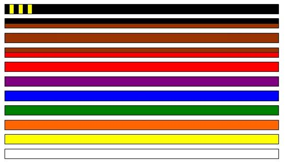

Hapkido
Valores
| No hay que oponerse a la fuerza ni a la energía del adversario, sino hacerse con ella para utilizarla en beneficio propio. |
Hay que penetrar en la defensa del adversario de una manera fluida, flexible y cambiante, a similitud del agua. |
La fuerza del adversario debe ser desviada, controlada y dirigida en la dirección deseada en forma de círculos. |
| 和 hwa |
柳 yu |
圓 won |
Tecnicas
Posturas
Patadas
| patada Descendente |
patada Giratoria con canto exterior |
Patada lateral |
patada Frontal a la cara |
low-kick |
| Dwikumchi chanaerigui |
Bakatdari chagui |
Jiguh chagui |
Michoo chagui |
Daetweboo chagui |
Armas
| bastón Largo |
bastón medio |
bastón Corto |
sable |
cuerda |
| yang bong |
chang bong |
dan bong |
shim gum |
chipang yisul |
Cinturones
